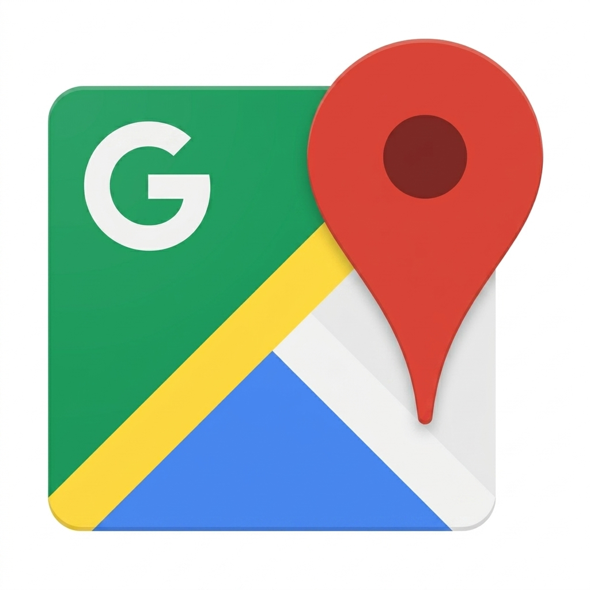

Dlaczego Twoja firma musi być na mapie?

Potęga Google Business Profile dla sektora MŚP
W dzisiejszych czasach fraza „blisko mnie” to jeden z najczęstszych parametrów wpisywanych w wyszukiwarkę.
Dla lokalnego przedsiębiorcy Google Business Profile (GBP), czyli dawna Wizytówka Google, to nie tylko pinezka na mapie – to często być albo nie być w procesie decyzyjnym klienta.
Dlaczego to kluczowe dla małych i średnich firm?
- Budowanie zaufania przez opinie: Polscy konsumenci są ostrożni. Średnia ocen i świeże komentarze to społeczny dowód słuszności, który działa silniej niż jakakolwiek reklama.
- Pierwszy kontakt bez wchodzenia na stronę: Numer telefonu, godziny otwarcia i wskazówki dojazdu są widoczne od razu. To skraca drogę klienta do Twoich drzwi.
- Lokalne SEO: Dobrze zoptymalizowana wizytówka pozwala wygrać z ogólnopolskimi sieciówkami w wynikach wyszukiwania na danym obszarze.
Studium przypadku: Przedszkole Niepubliczne
Wyzwanie: Nowo powstałe przedszkole miało problem z rekrutacją na semestr jesienny. Choć placówka była nowoczesna, rodzice z okolicy o niej nie wiedzieli, a w wyszukiwarce dominowały stare, zasiedziałe przedszkola publiczne.
Działania:
- Założenie wizytówki i weryfikacja lokalizacji.
- Dodanie profesjonalnej sesji zdjęciowej wnętrz (sale zabaw, ogród, kuchnia).
- Wprowadzenie sekcji „Pytania i Odpowiedzi”, gdzie wyjaśniono kwestie cateringu i metod dydaktycznych.
- Kampania zachęcająca obecnych rodziców do wystawiania opinii.
Efekt: Po 3 miesiącach przedszkole pojawiło się w „Top 3” na frazę „przedszkole prywatne Wesoła”. Liczba telefonów z prośbą o wizytę w placówce wzrosła o 140%, co pozwoliło na zamknięcie list rekrutacyjnych przed czasem.